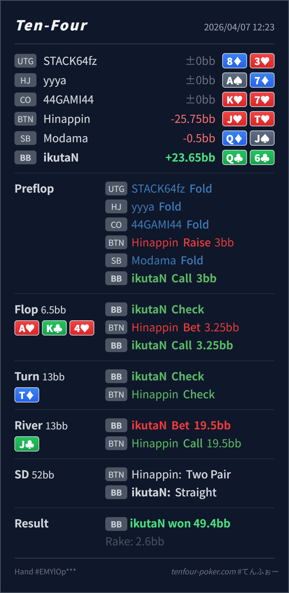

Preflop
良いQ♣6♣ は 3BB open に対する BB defend として自然です。
主論点は、A♥ K♣ 4♥ で Q♣6♣ を check-call した flop の float がどこまで支えられるかです。当時の思考メモはないので、「A-high board でも backdoor が少しあるし 1回は見たい」と考えた仮定で見ます。結論は、preflop defend と river の overbet lead は自然で、いちばん見直すべきなのは flop の continue です。
Q♣6♣J♥T♥A♥ K♣ 4♥ / T♦ / J♣A♥ K♣ 4♥ に対する Q♣6♣ は、pair も straight draw もなく、half-pot を OOP で受けるにはかなり弱いです。default は fold です。check-check で BTN range が capped になったあと、river で straight を作って大きく取りにいく line は良いです。Q♣6♣J♥T♥3BB, BB callA♥ K♣ 4♥ / T♦ / J♣3.25BB, BB call19.5BB, BTN call
良いQ♣6♣ は 3BB open に対する BB defend として自然です。
A♥ K♣ 4♥明確に広すぎる
Hero は Q-high で、pair も straight draw もなく、backdoor club しかありません。
T♦自然
Hero にはまだ showdown value がなく、river を見にいく形で十分です。
J♣良い
Hero は broadway でかなり強く、capped な range に対して大きく取りにいけます。
| 論点 | その場で起きがちな見え方 | どこがズレたか | 次回の基準 |
|---|---|---|---|
flop の Q♣6♣ call | Q-high でも overcard があり、backdoor club もあるので 1回くらい見たくなる | この board は BTN の A/K 優位がかなり強く、Q♣6♣ は pair も straight draw もありません。3.25BB を払っても clean な turn が少なく、OOP では実現値も落ちやすいです。 | A/K 高ボードの half-pot に対しては、pair, heart draw, より強い backdoor を優先し、Q-high の pure float は fold baseline にする |
| 結果の受け取り方 | river で straight まで行ったので、flop call も正しかった気がする | 今回は turn / river がかなり都合よく落ちただけで、flop 時点の continue 根拠は薄いままです。結果で前段の判断を美化すると、同じ overfloat が増えやすいです。 | 勝ったかどうか ではなく、その時点で continue の根拠が足りていたか で振り返る |
| ストリート | その時点の見え方 | 判断の軸 | 評価 | コメント |
|---|---|---|---|---|
| Preflop | BTN open に対して BB はかなり広く defend できます。 | Q♣6♣ は 3BB open に対する BB defend として自然です。 | 良い | ここは問題ありません。 |
Flop A♥ K♣ 4♥ | BTN は Ax, Kx, heart draw, broadway を広く持ち、BB 側はかなり守備的になります。 | Hero は Q-high で、pair も straight draw もなく、backdoor club しかありません。 | 明確に広すぎる | 3.25BB に対して続ける根拠が足りません。ここは素直に fold で大丈夫です。 |
Turn T♦ | flop を残した結果、Hero は broadway への gutshot を拾います。BTN の check-back で IP range はやや capped になります。 | Hero にはまだ showdown value がなく、river を見にいく形で十分です。 | 自然 | この street の問題は小さく、根本修正点は flop を残しすぎないことです。 |
River J♣ | turn check-check 後の BTN には Ax, Kx, JT, missed heart draw, 一部 Qx が残ります。 | Hero は broadway でかなり強く、capped な range に対して大きく取りにいけます。 | 良い | 19.5BB の overbet lead はかなり良いです。two pair や curiosity call をしっかり取りきれます。 |
A/K 高ボードで OOP から続けるときは、pair or draw が本当にあるか を先に確認すると overfloat が減ります。check-check で capped になった相手 range に対して大きく打つ発想はそのまま持っていて大丈夫です。どこから EV が出ていたか と どこは運で救われたか を分けて見ると精度が上がります。check-check 後は IP range が capped になりやすく、river lead は実戦でも機能しやすいです。